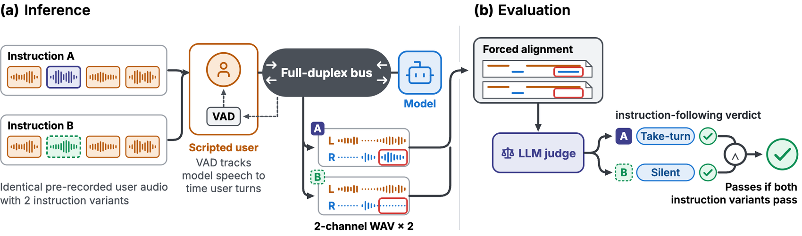

Instruct-FD: Can Your Full-Duplex Speech System
Follow Turn-Taking Instructions?
01Motivation
Existing full-duplex benchmarks — Full-Duplex-Bench v1 [1], v1.5 [2], FLEXI [3] — test whether a model can produce a fixed turn-taking behaviour at a cue, for instance taking the turn soon after the user finishes a question.
The limitation is that a model needs to adjust its turn-taking behaviour based on the conversation and the deployment context:
Both are legitimate, and a benchmark scoring conformity to one fixed repertoire can only reward one of them. So we ask: can a full-duplex speech system change its turn-taking behaviour when instructed to?
02Benchmark taxonomy
Every turn-taking instruction specifies which floor action to take at which cue.
Five cue categories
Five floor actions
Take turn · Backchannel · Silent · Yield · Continue
The confound, and the design that removes it
A model's default behaviour can masquerade as instruction following — an eager model always takes the floor because it always does, not because it was instructed to.
Our design is a scenario-controlled contrastive evaluation: one scenario, two contrastive instructions prescribing different floor actions at the same cue. A case passes only if the model performs the instructed action under both conditions.
Four contrastive instruction pairs

03Data curation
Human-authored seeds cover every cue × instruction-contrast cell; an LLM expands them with new scenarios. Final cases are human-reviewed.
| Cue category | Scenarios | Share | Instruction contrast | Scenarios | Share |
|---|---|---|---|---|---|
| Linguistic | 158 | 23.3% | Take / Silent | 182 | 26.8% |
| Speaker attribution | 147 | 21.6% | Take / Backchannel | 173 | 25.5% |
| Sound events | 129 | 19.0% | Yield / Continue | 167 | 24.6% |
| Paralinguistic | 125 | 18.4% | Backchannel / Silent | 157 | 23.1% |
| Temporal | 120 | 17.7% | — | — | — |

04Inference harness and judge
VAD-driven scripted user. The scripted user takes the turn, barges in, or yields based on each test case's stream logic. Identical pre-recorded user audio is paired with the two instruction variants, so the only thing that differs between the two runs is the instruction.
Judge reliability. Claude-Sonnet-5 scores each session from the aligned transcript, ground-truth user turns, instruction and criteria. It obtains 95.6% accuracy (κ = 0.91) on 816 human-annotated sessions, and 97.0% agreement across three LLM judges.

05Main results
No system reliably follows turn-taking instructions.
| Model | Cue type | Contrast | Avg | |||||||
|---|---|---|---|---|---|---|---|---|---|---|
| Ling. | Spk. | Snd. | Para. | Temp. | T/S | T/B | B/S | Y/C | ||
| Closed-source systems | ||||||||||
| GPT-Live-1 | 13.9 | 10.9 | 6.2 | 19.2 | 35.0 | 12.6 | 5.8 | 40.1 | 9.6 | 16.5 |
| Gemini Live 2.5 Flash (proactive) | 1.3 | 0.7 | 0.8 | 9.6 | 29.2 | 7.7 | 4.6 | 15.3 | 3.0 | 7.5 |
| Gemini Live 2.5 Flash | 1.9 | 5.4 | 0.0 | 10.4 | 21.7 | 4.4 | 5.2 | 15.9 | 4.8 | 7.4 |
| Grok Voice Think-Fast 2.0 | 0.0 | 0.0 | 0.8 | 1.6 | 15.8 | 0.0 | 9.8 | 0.6 | 2.4 | 3.2 |
| GPT-Realtime (VAD) | 1.3 | 0.7 | 0.8 | 2.4 | 9.2 | 0.0 | 6.4 | 1.9 | 2.4 | 2.7 |
| GPT-Realtime (SVAD) | 0.0 | 0.0 | 0.8 | 3.2 | 6.7 | 0.5 | 3.5 | 1.9 | 1.8 | 1.9 |
| Open-weight systems | ||||||||||
| Lychee-FD | 6.3 | 9.5 | 2.3 | 4.8 | 9.2 | 1.6 | 0.6 | 10.2 | 14.4 | 6.5 |
| MiniCPM-o 4.5 | 5.1 | 7.5 | 3.9 | 2.4 | 3.3 | 7.1 | 2.3 | 0.6 | 7.8 | 4.6 |
| PersonaPlex | 4.4 | 4.1 | 3.9 | 2.4 | 4.2 | 0.0 | 2.3 | 3.8 | 9.6 | 3.8 |
| Moshi | 3.2 | 4.8 | 4.7 | 4.0 | 1.7 | 0.0 | 0.6 | 10.8 | 4.2 | 3.7 |
| Moshi-RL | 1.9 | 4.8 | 2.3 | 3.2 | 4.2 | 0.5 | 5.2 | 1.9 | 5.4 | 3.2 |
| PersonaPlex-RL | 3.8 | 4.1 | 3.9 | 0.8 | 1.7 | 0.5 | 2.3 | 1.3 | 7.8 | 2.9 |
| Nemotron-VoiceChat-11B | 1.9 | 4.1 | 0.8 | 2.4 | 2.5 | 0.5 | 0.6 | 1.9 | 6.6 | 2.4 |
| DuplexCascade | 1.9 | 2.0 | 0.0 | 4.8 | 1.7 | 0.5 | 0.0 | 1.9 | 6.0 | 2.1 |
| Freeze-Omni | 0.6 | 2.7 | 0.8 | 0.0 | 0.8 | 2.7 | 0.0 | 0.0 | 1.2 | 1.0 |
Table 1. Paired pass rate (%). A case passes only when both conditions pass. Bold: best; underlined: second best.
The best system, GPT-Live-1, reaches only 16.5%; the best open-weight system, Lychee-FD, 6.5%. 11 of 15 system configurations fall below 6%.
06Analysis
Per-instruction pass rates reveal default behaviour
Scoring each condition on its own — rather than as a pair — exposes what each system does by default, independent of what it was told.
| Model | Take | Back. | Silent | Yield | Cont. | Avg |
|---|---|---|---|---|---|---|
| Closed-source systems | ||||||
| GPT-Live-1 | 12.7 | 40.0 | 82.9 | 65.3 | 20.4 | 44.3 |
| Gemini Live 2.5 Flash (proactive) | 10.7 | 18.5 | 86.1 | 58.1 | 37.1 | 40.5 |
| Gemini Live 2.5 Flash | 11.0 | 20.6 | 80.8 | 58.7 | 41.3 | 40.4 |
| Grok Voice Think-Fast 2.0 | 10.4 | 16.7 | 82.6 | 62.3 | 26.3 | 38.3 |
| GPT-Realtime (SVAD) | 6.2 | 12.7 | 84.4 | 74.9 | 23.4 | 37.8 |
| GPT-Realtime (VAD) | 15.2 | 18.8 | 71.4 | 62.9 | 26.9 | 37.4 |
| Open-weight systems | ||||||
| MiniCPM-o 4.5 | 23.7 | 6.7 | 51.9 | 8.4 | 93.4 | 33.3 |
| DuplexCascade | 4.2 | 9.1 | 66.1 | 18.0 | 73.7 | 31.1 |
| PersonaPlex-RL | 19.4 | 60.0 | 3.2 | 40.7 | 43.1 | 30.8 |
| Moshi-RL | 9.0 | 81.8 | 7.7 | 28.1 | 24.0 | 30.6 |
| Lychee-FD | 6.2 | 18.8 | 51.3 | 44.9 | 48.5 | 30.5 |
| Nemotron-VoiceChat-11B | 13.2 | 15.8 | 40.1 | 50.0 | 43.7 | 28.8 |
| PersonaPlex | 20.8 | 23.6 | 25.4 | 38.3 | 45.5 | 27.8 |
| Moshi | 8.2 | 47.6 | 25.4 | 31.7 | 20.4 | 26.4 |
| Freeze-Omni | 9.3 | 0.0 | 57.2 | 3.0 | 24.0 | 20.0 |
Figure 4. Per-instruction pass rate (%) by instructed behaviour, each condition scored on its own.
Silent 71–86% and yield 58–75%, but take turn ≤ 15%.
MiniCPM-o 4.5 and DuplexCascade keep talking (continue 93% / 74%); RL-tuned models backchannel (Moshi-RL 82%, PersonaPlex-RL 60%).
No system follows take-turn instructions more than 24% of the time.
Systems act on floor availability, not the instruction
Pass rate tracks how much floor was left open at the cue rather than what the instruction said. Pooled over the 15 system configurations, ρ = +0.23 for take and −0.26 for silent. Per system: Nemotron-VoiceChat ρ take +0.43 / silent −0.54; MiniCPM-o 4.5 ρ take +0.28 / silent −0.39.
GPT-Live-1's lead is narrow
It comes from following backchannel-vs-silent instructions and from temporal cues.
| Cue type | Take | Back. | Sil. | Yield | Cont. | T/S | B/S | T/B | Y/C |
|---|---|---|---|---|---|---|---|---|---|
| Temporal | 47 | 65 | 82 | 67 | 13 | 57 | 57 | 20 | 7 |
| Linguistic | 3 | 36 | 92 | 61 | 5 | 0 | 63 | 2 | 5 |
| Paralinguistic | 15 | 47 | 73 | 77 | 17 | 10 | 47 | 6 | 10 |
| Sound events | 2 | 17 | 89 | 47 | 50 | 3 | 6 | 0 | 14 |
| Speaker attribution | 5 | 37 | 79 | 79 | 15 | 4 | 30 | 3 | 12 |
Figure 6. GPT-Live-1 pass rate (%) by cue type — per-instruction (left five columns) and paired by contrast (right four, after the rule). It adjusts best on temporal cues and worst on sound events. Take turn succeeds only on temporal cues (47% vs ≤ 15%), so proactive behaviour that requires barging into the user's floor is still weak. Y/C is low because it tends to always yield.
Delivering the instruction as text does not help
| Model | Speech | Text | Δ |
|---|---|---|---|
| GPT-Live-1 | 16.5 | 12.8 | −3.7 |
| MiniCPM-o 4.5 | 4.6 | 4.0 | −0.6 |
| PersonaPlex | 3.8 | 3.9 | +0.1 |
| PersonaPlex-RL | 2.9 | 3.8 | +0.9 |
| Nemotron-VoiceChat-11B | 2.4 | 1.8 | −0.6 |
| Freeze-Omni | 1.0 | 0.9 | −0.1 |
Figure 7(a). Open-weight systems move ≤ 0.9 points with a text instruction; GPT-Live-1 drops 3.7 points.
Instruct-FD pass rate plotted against Full-Duplex-Bench scores reported by Artificial Analysis [5] shows no correlation: ρ = −0.07 (n = 7). Being good at turn-taking and being controllable in turn-taking are close to independent.
Interaction RL post-training improves backchannelling, but hurts overall
| Pair | Take | Back. | Sil. | Yield | Cont. | T/S | B/S | T/B | Y/C | Overall |
|---|---|---|---|---|---|---|---|---|---|---|
| Moshi → Moshi-RL | +0.8 | +34.2 | −17.7 | −3.6 | +3.6 | +0.5 | −8.9 | +4.6 | +1.2 | −0.5 |
| PersonaPlex → PersonaPlex-RL | −1.4 | +36.4 | −22.1 | +2.4 | −2.4 | +0.5 | −2.5 | ±0.0 | −1.8 | −0.9 |
Figure 8. Change in pass rate (%) after interaction post-training [4]. RL improves pass rate on backchannel cases substantially (+34 and +36 points) but lowers the B/S paired pass rate — the gain comes from backchannelling more often, including when told to stay silent.
07What model failure looks like
Five sessions, one per failure mode. Timestamps are seconds on the shared session clock; overlapping ranges are both channels active.
08Listen to the contrast
Each demo is one scenario rendered twice, under two instructions that prescribe different actions at the same cue. The scenario audio is identical; only the instruction changes. If a system were controllable, the two recordings would diverge at the cue.
Demo scenarios are placeholders pending final selection.
References
- GT. Lin et al. Full-Duplex-Bench: A benchmark to evaluate full-duplex spoken dialogue models on turn-taking capabilities. arXiv:2503.04721, 2025.
- GT. Lin et al. Full-Duplex-Bench v1.5: Evaluating overlap handling for full-duplex speech models. arXiv:2507.23159, 2026.
- Y. Ge et al. FLEXI: Benchmarking full-duplex human-LLM speech interaction. arXiv:2509.22243, 2025.
- A. Ohashi, N. Zeghidour, A. Défossez, E. Kharitonov. Multi-faceted interactivity alignment in full-duplex speech models. arXiv:2606.11167, 2026.
- Artificial Analysis. Speech-to-speech leaderboard. artificialanalysis.ai/speech-to-speech
Citation
@article{tang2026instructfd,
title = {Instruct-FD: Can Your Full-Duplex Speech System Follow
Turn-Taking Instructions?},
author = {Tang, Yuzhi and Ma, Wentao and Zhao, Xiling and Salimi, Ahmad and
Harfi Moridani, Sepehr and Shen, Dongming and Wang, Jixuan and
Abdulrazzag, Abdulrahman and Aubry, Murdock and Chen, Yu-Hua and
Lee, Daniel and Lee, Jaewon and Mackey, Jonah and Meng, Silin and
Stranges, Nicholas and Xiong, Chenxu and Yu, Hao and Zhu, Yi and
Li, Mu and Smola, Alex},
journal = {arXiv preprint arXiv:2607.20460},
year = {2026}
}